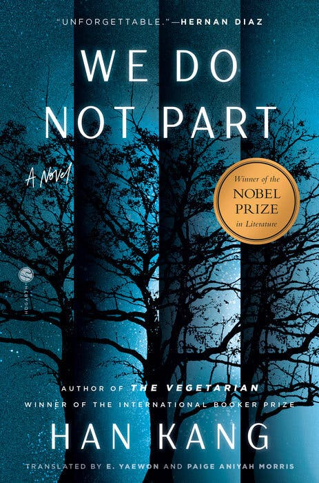
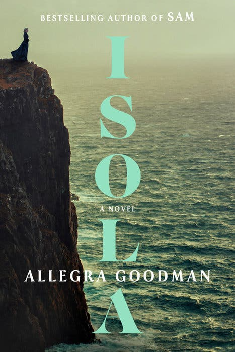
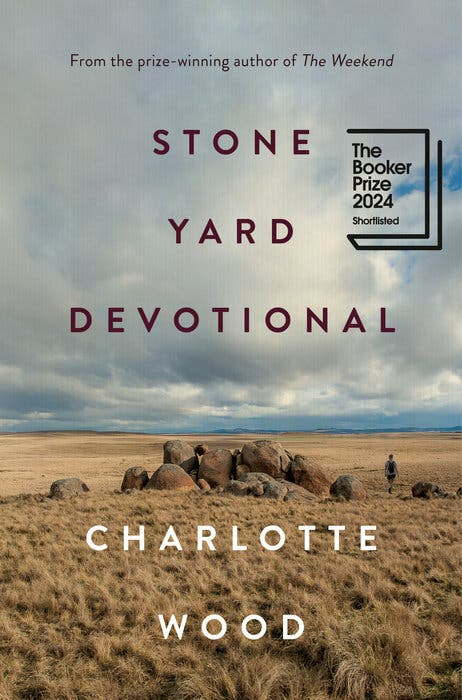
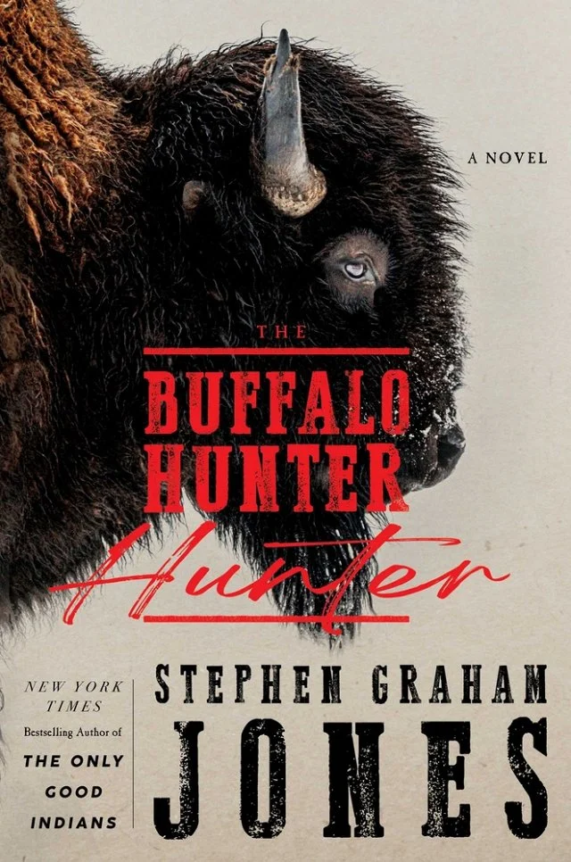

Bienvenido a la sección de Libros
Aquí encontrarás libros que abarcan con
sus reseñas y detalles interesantes sobre cada uno
Explora una variedad de géneros y autores,
y sumérgete en el mundo de la literatura.

Imposible decir adiós
por: Han Kang
La nueva novela de la escritora ganadora del Premio Nobel de Literatura,
traducida por E. Yaewon y Paige Aniyah Morris, repasa un violento capítulo
de la historia de Corea del Sur: entre 1947 y 1954, en Jeju,
una isla ubicada frente a la costa de Corea del Sur,
al menos 30.000 personas fueron asesinadas en atrocidades perpetradas,
en su mayoría, por el gobierno. Este libro, inquietante y onírico,
se centra en una escritora que viaja a Jeju durante una tormenta de nieve
para rescatar el pájaro que es la mascota de su amiga, una vez allí
la protagonista descubre las profundidades de la obsesión de su amiga por la masacre.
Ver descripción

Isola
por: Allegra Goodman
La apasionante novela de Goodman narra el destino real de Marguerite
de la Rocque de Roberval, una noble francesa del siglo XVI. Abandonada
en una isla desolada del golfo de San Lorenzo por un tutor sin
escrúpulos; quien se enamoró de Marguerite, su asistente,
la protagonista debe luchar por sobrevivir junto con su amante y
su devota nodriza, a medida que se acerca el crudo invierno canadiense.
La narración de Marguerite es contenida y elegante, como si contar su
historia fuera una oportunidad para imponer orden en una vida
que ella no diseñó.
Ver descripción

El Devocional Stone Yard
por: Charlotte Wood
La sombría y exquisita novela de Wood se centra en una
conservacionista atea de la fauna salvaje de sesenta y
tantos años que deja atrás a su marido y su carrera para
vivir en un convento cerca de su pueblo rural australiano.
A pesar de una serie de incidentes perturbadores
—una plaga de ratones, la llegada de los restos de una monja
desaparecida 20 años antes, la reaparición de su compañera
de clase de la infancia—, la narradora encuentra
en este retiro el tiempo y el espacio para reflexionar sobre
el perdón, el arrepentimiento y cómo vivir y morir, si no
virtuosamente, sí de la manera más inofensiva posible.
Ver descripción

The Buffalo Hunter Hunter
por: Stephen Graham Jones
La ficción previa de Jones ha utilizado con confianza diversos géneros
de terror para explorar la experiencia de los nativos estadounidenses,
y su horripilante nueva novela sigue el mismo camino, a través de un
hombre de la tribu pies negros que se convierte en vampiro en la década
de 1870 y busca venganza por los pecados del país. El libro es un
entretenido nido de historias, que alterna entre el chupasangre,
un pastor de 1912 y un investigador del siglo XXI, mientras Jones
nos invita a reflexionar sobre cómo las historias que contamos sobre
nosotros mismos pueden ser, de manera simultánea, confesiones y
ocultamientos.
Ver descripción